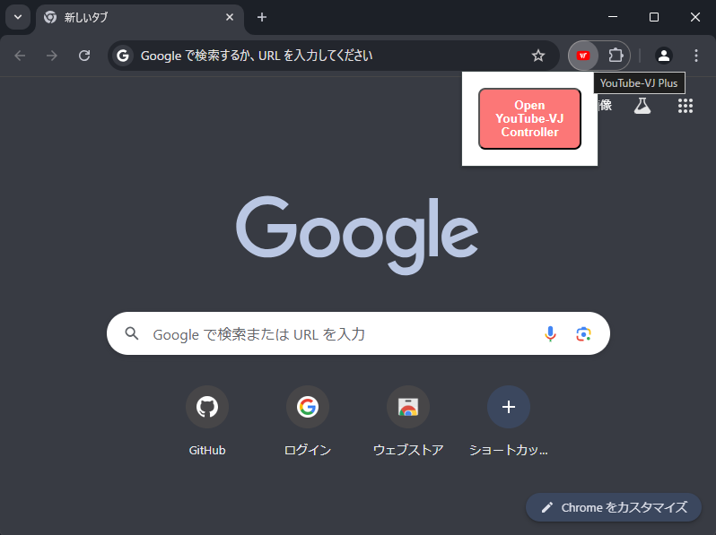
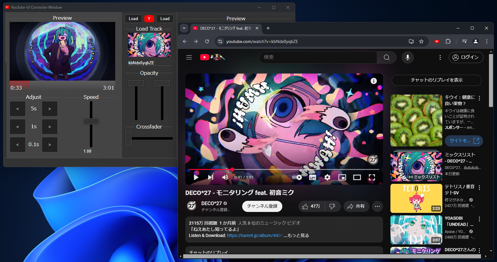
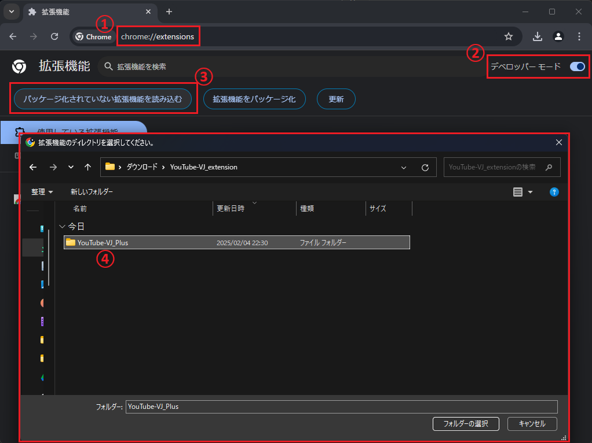
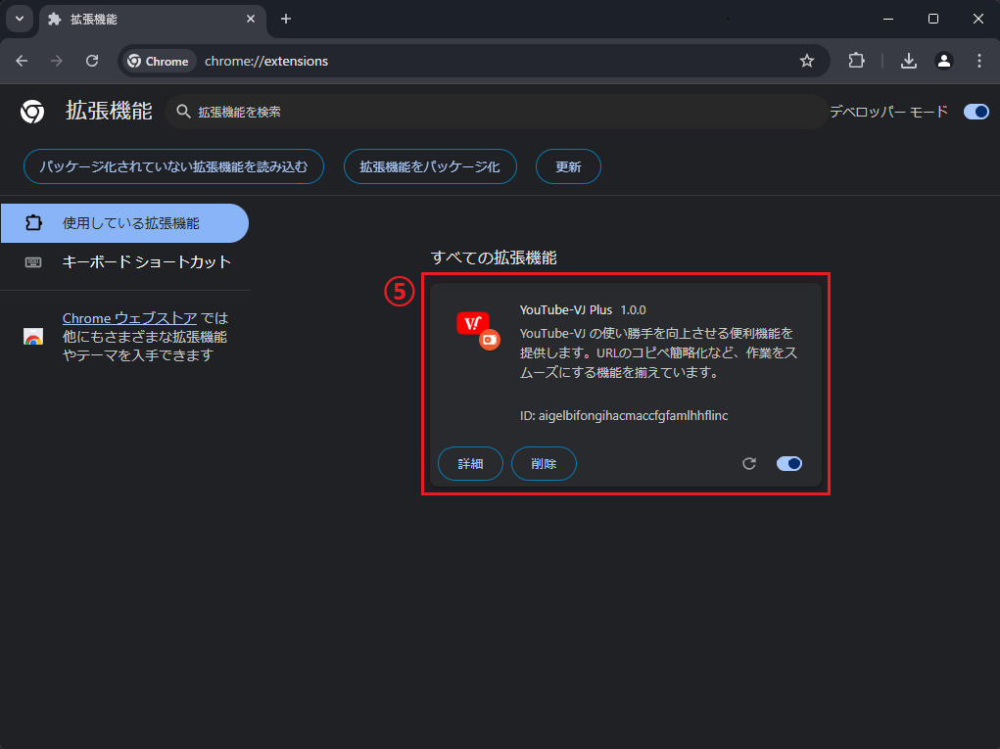
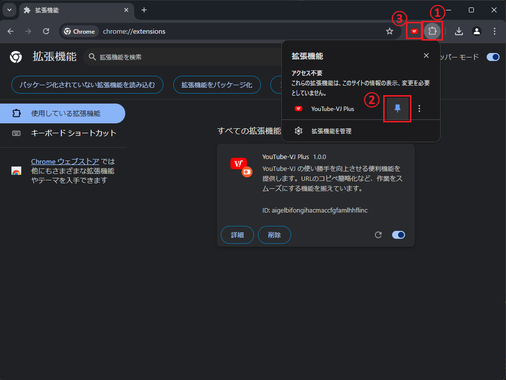

拡張機能のアイコンをクリックすることで YouTube-VJ のコントローラーウィンドウをすぐに開くことができます

別タブで YouTube を開き、動画再生をすると自動的に YouTube-VJ にも反映されます

まだ製作途中というのもあり、Chrome ウェブストアでの公開は行っておりません。
そのため、拡張機能の導入手順が少し複雑になっております。
注意：展開したフォルダを拡張機能の導入後に移動や削除等をすると Chrome からも削除されてしまいますのでお気を付けください。
chrome://extensions を入力YouTube-VJ Plusが追加されることを確認


不具合やバグを発見した場合は、お気軽にご連絡ください
機能改善のご要望も受け付けてます！！！